Vision
To be the most free-thinking company admired for its people, produce and performance.
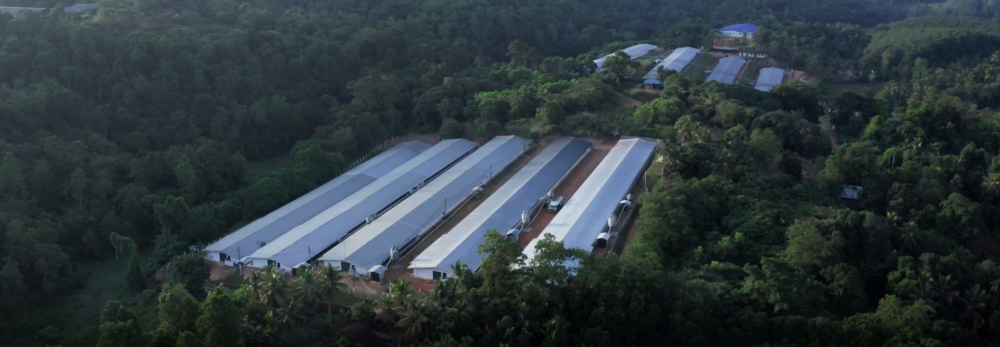
Incorporated on 1st January 1986, evolving and shaping itself to a private limited organisation in 2002, Anthoney's has become the greenest and safest chicken brand in Sri Lanka.
The vision of the company was to promote family well-being. The strong process driven culture of the company helped establish a high quality product in the early years. We shaped as a private limited organisation in 2002, which permitted us to create organisation development while likewise expanding precision with presenting to it another vision.
New Anthoney’s stands at the forefront as a healthy chicken brand, with an emphasis on the ‘green’ chicken concept. Mr and Mrs. Emil Stanley, the founding Chairmans of the company, had a long-term vision for producing healthier chicken without the use of antibiotics, hormones or chemical additives. After 35 years, Sri Lanka as a country is now moving towards the same health focused philosophy.
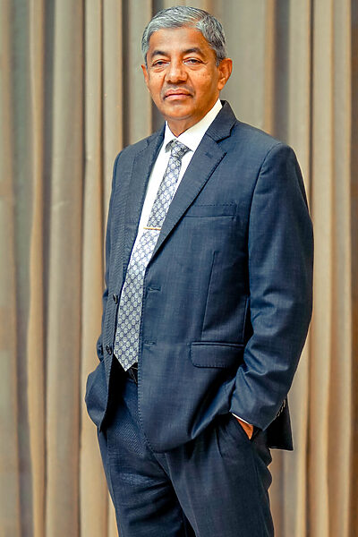
Everyday Luxury
“There are many luxury items in the world that are consumed by luxury people only. But there is one unique luxury item in the world that can be consumed by all across people. Anthoney’s Chicken. What we do here is making a world class luxury chicken an everyday choice of everybody.”
To be the most free-thinking company admired for its people, produce and performance.
To be the greenest poultry company, which progresses and nurtures professionals at every level of the organisation to serve society with passion.
To produce Sri Lanka’s safest chicken


A fundamental principle in life is that we should love and care for our fellow humans. You may trust us to go above and beyond to ensure one’s success, fulfillment, and happiness through a long-term partnership.
Individual achievements in knowledge, expertise, and work practice are recognised at New Anthoney’s. Our culture of teamwork and synergy fosters respect, innovation, and creativity, resulting in an environment where excellence is the norm rather than the exception.
We think investing in ourselves through learning and development is the most empowering investment we can make. We owe it to ourselves to break new ground and broaden our perspectives to achieve personal and professional fulfillment.
We feel the only way to conduct business is to maintain a high level of integrity and trust. People will trust us with their commitments, aspirations, and futures because we create things, services, and structures with integrity.
1986 – 2023
Featured Clients
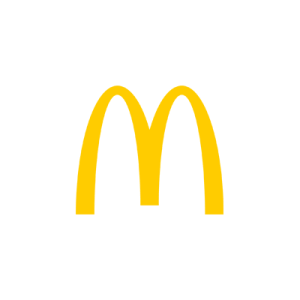
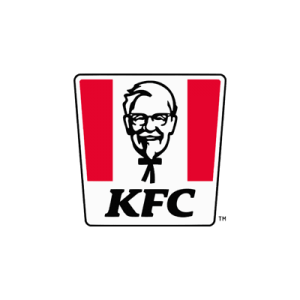
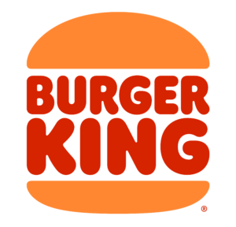
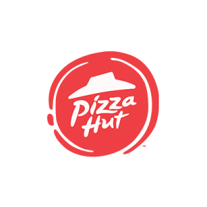
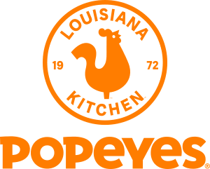
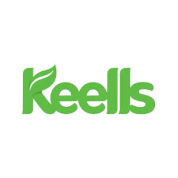
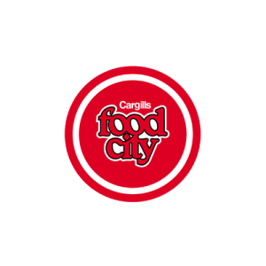
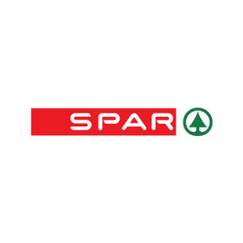
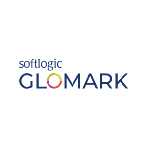
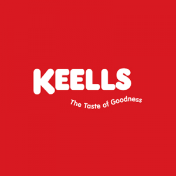
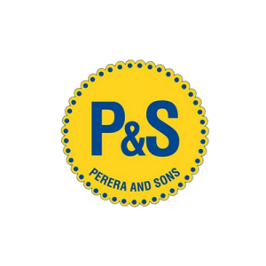
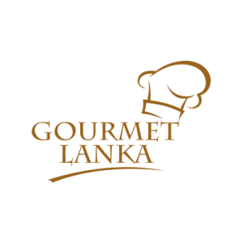
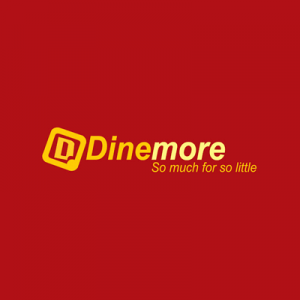
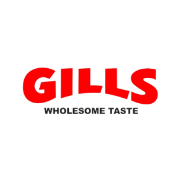
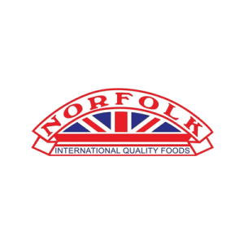